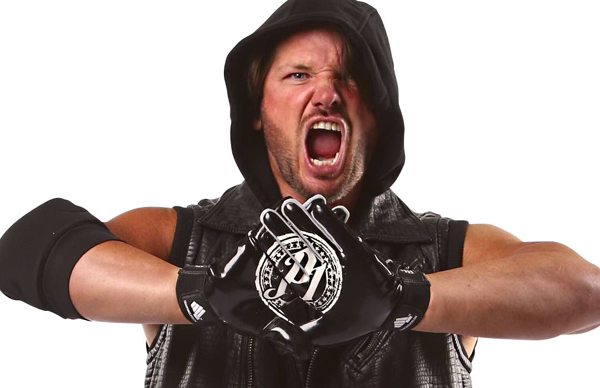
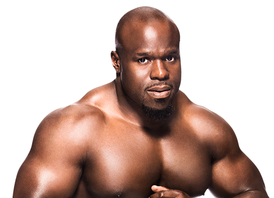
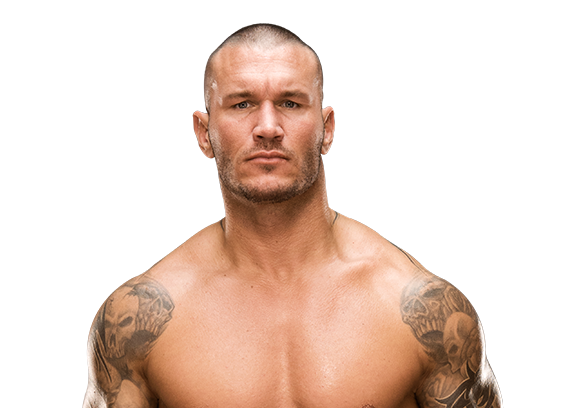

AJ Styles

- American wrestler known to audiences for his important roles in TNA wrestling.
- He earned a partial college wrestling scholarship, before eventually enrolling in professional wrestling school.
- In his TNA career, he has won the World Heavyweight Championship four times and 18 total championships.
- He has three sons, Ajay, Avery and Albery, with wife Wendy Jones.
- He once beat Booker T for the TNA Television championship.
Apollo Crews

Well known by the ring name Apollo Crews in the developmental WWE brand NXT in addition to his other ring name Uhaa Nation, he is a professional wrestler who broke through in 2011 with promotion by Dragon Gate.
He played soccer, football and track at a military high school. He received the nickname Uhaa Nation from his weight training coach in high school.
He trained at World Wrestling Alliance 4 after college and spent more than a year on the Georgian independent circuit.
He and his sister, a member of the United States Army, are of Nigerian descent. He was born in Sacramento, but raised in Atlanta, GA.
He would become a friend of fellow professional wrestler Kevin Owens.
Randy Orton

Third-generation professional wrestler who became the youngest person to hold the WWE Heavyweight Champion at age 24.
He attended Hazelwood Central High School and after joining the United States Marine Corps in 1998, and received a bad conduct discharge for going AWOL and disobeying orders from his commander.
He appeared in the 2011 film, That's What I Am, and starred in the 2013 film, 12 Rounds: Reloaded.
His father, grandfather, and uncle were also professional wrestlers. He married Samantha Speno on September 21, 2007 and they had a daughter named Alanna Marie Orton on July 12, 2008 before divorcing in July 2013. He then married Kimberly Kessler in 2015.
He pursued an acting career, following in the footsteps of fellow wrestler Dwayne Johnson.